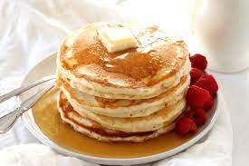

Fluffy Pancakes

Irresistable fluffy pancakes for the win!
Ingredients
- 3/4 cup milk
- 2 tablespoons white vinegar
- 1 cup all-purpose flour
- 2 tablespoons white sugar
- 1 tablespoon baking powder
- 1/2 teaspoon baking soda
- 1/2 teaspoon salt
- 1 egg
- 2 tablespoons butter, melted
- cooking spray
Steps
Step 1
- Combine milk with vinegar in a medium bowl and set aside for 5 minutes to "sour"
Step 2
- Combine flour, sugar, baking powder, baking soda, and salt in a large mixing
bowl. Whisk egg and butter into "soured" milk. Pour flour mixture into the milk
mixture and whisk until lumps are gone.
Step 3
- Heat a large skillet over medium heat, and coat it with cooking spray. Pour
1/4 cupfuls of batter onto the skillet, and cook until bubbles form and the edges are dry,
about 2 to 3 minutes. Flip with spatula, and cook until browned on the other side.
Repeat with remaining batter.